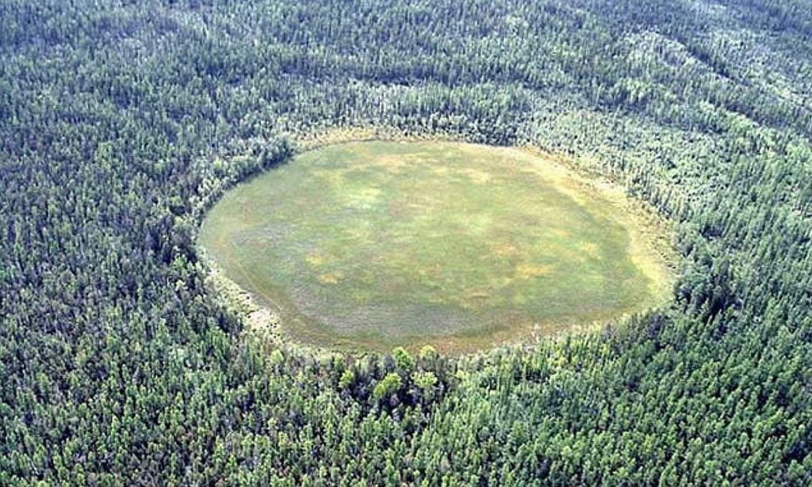

ဒီပေါက်ကွဲမှုကြီးမှာ ဥက္ကာပျံကြောင့်လို့ ပြောရအောင်ကလဲ ဥက္ကာပျံ မှန်ရင် ဖြစ်ပေါ်လာတဲ့ ဥက္ကာကျွင်း ဖြစ်ကျန်ရစ်ခဲ့တာ မှရှိပါဘူး။ ဥက္ကာပျံ လေထဲမှာ ပေါက်ကွဲသွားခဲ့ရင်လဲ ဥက္ကာခဲ အပိုင်းအစတွေ ပျံ့ကျဲပြီး ကျန်ခဲ့ရမှာပါ။ အခုဒီဒေသမှာ ဘာဥက္ကာခဲ အပိုင်းအစ အကျွင်းအကျန်မှ ရှာမတွေ့ပါဘူး။ ဒီအချက်ဟာ သိပ္ပံပညာရှင်တွေ အကြားမှာ အတော်လေး ခေါင်းစားစေတဲ့ ဖြစ်ရပ်တခု ဖြစ်နေရပါတယ်။ ဘယ်လို အရာ ဝတ္ထုကများ အထောက်အထား မကျန်ခဲ့ပဲနဲ့ ကြီးမားတဲ့ ပေါက်ကွဲမှုကြီး ဖြစ်စေလဲ ဆိုတာကို စဉ်းစားမရ ဖြစ်နေကြလို့ပါ။
စိတ်ကူးယာဉ် သိပ္ပံ စာရေးဆရာ တွေကတော့ အမျိုးမျိုး တွေးလုံးထုတ်ကြပါတယ်။ သူတို့ တွေးလုံးထုတ်တဲ့ အထဲမှာ အခြားကမ္ဘာကလာတဲ့ အာကာသယာဉ် ပေါက်ကွဲမှုကြောင့် ဆိုတာကလဲ ထိပ်ဆုံးက ပါနေပါတယ်။
ဆိုက်ဘီးရီးယား တက္ကသိုလ်က သိပ္ပံပညာရှင် ဒန်နီအိုင် ခရင်နီကော့ဗ် ဦးဆောင်တဲ့ ပညာရှင် အဖွဲ့က ဒီသီအိုရီကို တင်ပြတာပဲ ဖြစ်ပါတယ်။ သူတို့တင်ပြတဲ့ စာတမ်းရဲ့ အဆိုအရ အခုပေါက်ကွဲမှုဟာ ကမ္ဘာ့လေထုထဲကို ဖြတ်သန်းဝင်ရောက်လာခဲ့တဲ့ ဥက္ကာပျံ တစ်စင်းကြောင့် ဖြစ်ရတာလို့ ဆိုပါတယ်။
ဒီဥက္ကာပျံဟာ ကမ္ဘာ့လေထုထဲကို ထောင့်ခပ်နိမ့်နိမ့်ကနေ ဖြတ်သန်းဝင်ရောက်လာခဲ့ပြီး ကမ္ဘာမြေနဲ့ တိုက်မိခဲ့ခြင်း မရှိပဲ လေထုထဲက ရှပ်ပျံသွားပြီးတဲ့နောက် ကမ္ဘာ့အပြင်ဖက်ကို ပြန်ထွက်သွားခဲ့တာလို့ သူတို့က ဆိုပါတယ်။
အခြားသိပ္ပံ ပညာရှင်တွေက ဘယ်လို ယူဆခဲ့သလဲ
အခြား သိပ္ပံ ပညာရှင်တွေက ဒီ တန်ဂုစကာ ဖြစ်စဉ်နဲ့ ပါတ်သက်လို့ သီအိုရီ အမျိုးမျိုး တင်ပြခဲ့ပါသေးတယ်။ အဲ့သည်အထဲက လူစိတ်ဝင်စားမှု အများဆုံးရတဲ့ သီအိုရီကတော့ ပြင်ပကမ္ဘာက ရောက်လာတဲ့ ရေခဲတုံးကြီး ပေါက်ကွဲထွက်သွားပြီး ဖြစ်လာတယ် ဆိုတဲ့ အယူအဆပဲ ဖြစ်ပါတယ်။ ဒီရေခဲတုံးကြီးဟာ လေထုထဲ ဝင်လာချိန်မှာ အပူကြောင့် အရည်ပျော်ပြီး ပြင်းထန်တဲ့ ပေါက်ကွဲမှုနဲ့အတူ အငွေ့ပျံသွားတယ်လို့ ယူဆကြပါတယ်။
ဘာသက်သေ အထောက်အထားတွေ ရှိလဲ
ဒီလို ရေခဲ အငွေ့ပျံပြီး ပေါက်ကွဲထွက်သွားခဲ့မယ်ဆို ဖြစ်ပေါ်လာတဲ့ ပေါက်ကွဲမှုအားက မြေပြင်မှာရှိတဲ့ သစ်ပင်တွေ လဲကျသွားအောင် စွမ်းဆောင်နိုင်မှာ ဖြစ်ပါတယ်။ ပြီးတော့ မြေပြင်မှာ ဥက္ကာခဲ တိုက်မိလို့ ဖြစ်လာတဲ့ တွင်းလဲ ရှိမှာ မဟုတ်ပါဘူး။ ပြီးတော့ ဥက္ကာခဲ အပိုင်းအစတွေလဲ မြေပြင်မှာ ပြန့်ကျဲ ကျန်နေတော့မှာ မဟုတ်ပါဘူး။
ပြဿနာက ဒီ ရေခဲတုံး သီအိုရီက အခြား သက်သေအထောက်အထားတွေနဲ့ မကိုက်ညီတာပဲ ဖြစ်ပါတယ်။ ဒီဖြစ်စဉ်ကို ကိုယ်တွေ့မျက်မြင် မြင်လိုက်ရတဲ့ သက်သေတွေရဲ့ ပြောစကားအရ “ကောင်းကင်ကြီးက နှစ်ခြမ်းကွဲထွက်သွားတယ်၊ ပြီးတော့ ကြီးမားပြင်းထန်တဲ့ ပေါက်ကွဲမှုကြီး ဖြစ်ပေါ်လာပြီး မြေပြင်မှာ မီးတွေ အကြီးအကျယ် လောင်ကျွမ်းကျန်ရစ်ခဲ့တယ်” လို့ ပြောကြပါတယ်။ သူတို့ရဲ့ ပြောစကားတွေကို ပြန်လည်ဆက်စပ် တည်ဆောက်ကြည့်လိုက်တော့ ဒီ ပေါက်ကွဲသွားတဲ့ အရာဝတ္ထုဟာ မပေါက်ကွဲမီမှာ မိုင် ၄၃၅ မိုင်ခန့် (၇၀၀ ကီလိုမီတာခန့်) ကောင်းကင်မှာ ဖြတ်ပျံသန်းသွားပြီးမှ ပေါက်ကွဲမှု ဖြစ်လာတယ် ဆိုတာကို တွေ့ရှိရပါတယ်။
ဖြစ်စဉ်ကို ကွန်ပြူတာဖြင့် simulate လုပ်ကြည့်ခြင်း
ဒီဖြစ်စဉ်ရဲ့ အဖြေကို သိရဖို့ ဆိုက်ဘီးရီးယား တက္ကသိုလ် ပညာရှင် အဖွဲ့ဟာ ကွန်ပြူတာကို အသုံးပြုပြီး ဖြစ်စဉ်ကို ပြန်လည် simulate လုပ် ပုံဖေါ်ကြည့်ကြပါတယ်။ သူတို့ဟာ ကျောက်တုံး၊ ရေခဲ၊ သတ္တု အစရှိတဲ့ အရာဝတ္ထုတွေ လေထုထဲမှာ တစ်စက္ကန့်ကို ၁၂ မိုင်နှုန်း (တစ်စက္ကန့် ၂၀ ကီလိုမီတာ နှုန်း) နဲ့ ပျံသန်းဝင်ရောက်လာရင် ဖြစ်လာမယ့် အခြေအနေကို ကွန်ပြူတာနဲ့ တွက်ချက်ပြီး ပုံဖော်ကြည့်ကြတာပါ။ (တစ်စက္ကန့် ၂၀ ကီလိုမီတာနှုန်းနဲ့ တွက်ရတာက လေထုထဲ ဝင်လာတဲ့ ဥက္ကာတုံးတွေဟာ အနည်းဆုံး တစ်စက္ကန့်ကို ၁၁ ကီလိုမီတာ အမြန်နှုန်းနဲ့ ဝင်လာလို့ ဒီနှုန်းရဲ့ ၂ ဆ နီးပါးနဲ့ တွက်ကြည့်ကြတာ ဖြစ်ပါတယ်)။
ဒီအရာဝတ္ထုတွေ ဒီလောက် အမြန်နှုန်းနဲ့ လေထုထဲ ပျံသန်းဝင်ရောက်လာတဲ့အခါ လေထုနဲ့ ပွတ်တိုက်မိပါတယ်။ ဒီပွတ်တိုက်မှုကြောင့် ဒီ ဥက္ကာခဲတွေဟာ ချက်ချင်း အပူချိန် တက်လာပါတယ်။ ရေဟာ ၁၀၀ ဒီဂရီ စင်တီဂရိတ်မှာ အငွေ့ပျံတာမို့ ရေခဲတုံးကြီးသာ ကမ္ဘာ့လေထုထဲ ဝင်ရောက်လာရင် ခနလေးနဲ့ အငွေ့ပျံသွားမယ်လို့ ယူဆရပါတယ်။
သူတို့အဖွဲ့ရဲ့ တွက်ချက်မှုအရ ဒီလို ကြီးမားတဲ့ ပေါက်ကွဲမှုကို ဖြစ်ပေါ်စေမယ့် ရေခဲတုံးကြီးဟာ ကမ္ဘာ့လေထုထဲ ဝင်လာပြီး ကီလိုမီတာ ၃၀၀ ထက် ပိုပြီး ဝေးအောင် မသွားနိုင်ပါဘူးတဲ့။ ကီလိုမီတာ ၃၀၀ (၁၈၆ မိုင်) ပြည့်အောင် မသွားရသေးခင်မှာပဲ လုံးဝ အငွေ့ပျံ ပျောက်ကွယ်သွားမှာ ဖြစ်ပါတယ်။

သူတို့ရဲ့ simulation အရဆို တန်ဂုစကာ ပေါက်ကွဲမှုကြီး ဖြစ်စဉ်ဟာ ကြီးမားတဲ့ သံတုံးကြီး တစ်တုံး ကမ္ဘာ့လေထုထဲ ဖြတ်ပျံသွားလို့ ဖြစ်ရတာလို့ ဆိုပါတယ်။ ဒီသံတုံးကြီးဟာ ဘောလုံးကွင်းကြီး တစ်လုံးစာလောက် အရွယ်ရှိမယ်လို့ ခန့်မှန်းပါတယ်။
ဒီသံတုံးကြီး ကမ္ဘာ့လေထု အပေါ်ပိုင်းကို ဖြတ်ပျံသွားတဲ့ အချိန်မှာ အရမ်းပူလာပါတယ်။ ဒါပေမယ့် သံက ၃,၀၀၀ ဒီဂရီ စင်တီဂရိတ်မှ အငွေ့ပျံတာမို့ ကမ္ဘာ့လေထုထဲ ဖြတ်ပျံချိန် ပျောက်ကွယ်သွားမှာ မဟုတ်ပါဘူး။
ဒီလို အလွန်မြန်တဲ့ အမြန်နှုန်းနဲ့ ဖြတ်ပျံတဲ့အတွက် လေထုထဲမှာ အင်အားပြင်းထန်တဲ့ Shock wave လှိုင်းတွေ ဖြစ်လာပါတယ်။ ဒီ shock wave ဟာ မြေပြင်က သစ်ပင်တွေကို လဲကျသွားအောင် ပြင်းထန်နိုင်ပါတယ်။
အကယ်လို့ ဒီသံတုံးရဲ့ အစိတ်အပိုင်းချို့ အငွေ့ပျံ သွားခဲ့မယ် ဆိုလဲ ဒီအငွေ့တွေဟာ သံမှုန်တွေ အနေနဲ့ မြေပြင်ပေါ် ပျံ့ကျဲ ကျသွားမှာ ဖြစ်ပါတယ်။ ဒီသံမှုန်တွေကို ကမ္ဘာမြေထဲက သံမှုန်တွေနဲ့ ဘယ်လိုမှ ခွဲခြာလို့ ရမှာ မဟုတ်ပါဘူး။
နောက်ပြီး ဒီသီအိုရီဟာ အဲ့သည် တန်ဂုစကာ ပေါက်ကွဲမှုကြီး ဖြစ်ပြီး ကာလမှာ ဥရောပတိုက်ရဲ့ လေထုအလွှာ အပေါ်ပိုင်းမှာ ဖုန်မှုန့်တွေ များလာတဲ့ အချက်နဲ့လဲ ကိုက်ညီနေပါတယ်။
ကံကောင်းခြင်းလေလား
အကယ်လို့ ဒီပညာရှင်တွေရဲ့ တင်ပြတဲ့ သီအိုရီသာ မှန်ကန်ခဲ့မယ် ဆိုရင် ကမ္ဘာကြီးဟာ အဲ့သည်နေ့ မနက်က ကြီးမားတဲ့ ဥက္ကာပျံကြီးနဲ့ တိုက်မိလု အခြေအနေကနေ လက်မတင်ကလေး လွတ်မြောက်သွားတယ်လို့ ပြောရမှာ ဖြစ်ပါတယ်။ အကယ်လို့သာ ဒီ မီတာ ၂၀၀ လောက် အချင်းရှိတဲ့ ဥက္ကာခဲကြီး ဝင်တိုက်ခဲ့မယ်ဆို ဆိုက်ဘီးရီးယား ဒေသတခုလုံးကို ကြီးမားတဲ့ ပျက်စီးဆုံးရှုံးမှုကြီး ဖြစ်လာစေနိုင်မှာ ဖြစ်ပါတယ်။
ဒီဥက္ကာခဲကြီး ဝင်တိုက်လို့ ဖြစ်လာမယ့် ဥကက္ကာတွင်းကြီးဟာ နှစ်မိုင်လောက် ကျယ်နိုင်ပါတယ်။ ဒါ့အပြင် လေထုထဲကိုလဲ ကြီးမားတဲ့ ဖုန်မှုန့်တွေ ပျံ့လွင့်သွားစေပြီး နေရောင်ကို ဖုံးလွှမ်းသွားတဲ့အတွက် လူနဲ့ သက်ရှိတွေ အပေါ်လဲ ကြီးမားတဲ့ ဆိုးကြိုးတွေ ဖြစ်လာစေနိုင်ပါတယ်။
ဒီ့အစား လက်မတင်လေး ကပ်လွတ်သွားခဲ့တဲ့အတွက် ဒီ တန်ဂုစကာ ပေါက်ကွဲမှုကြောင့် လူ ၃ ဦးပဲ အသက်ဆုံးရှုံးခဲ့ ရပါတယ်။ အကယ်လို့သာ လူနေထူထပ်တဲ့ မြို့ကြီးတမြို့ ဖြစ်ခဲ့မယ် ဆိုရင် အဖြစ်ဟာ တွေးဝံ့စရာ မရှိပါဘူး။
Reference: Tunguska explosion in 1908 caused by asteroid grazing Earth | Astronomy